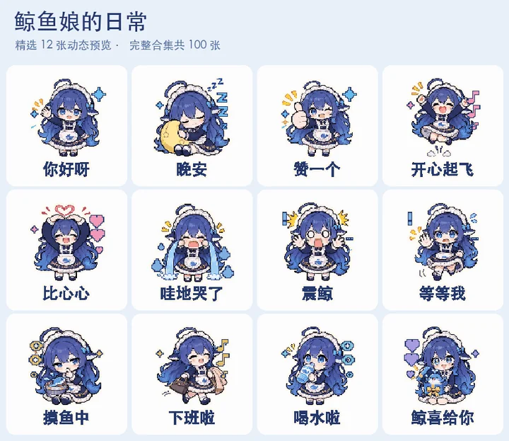

pixel-gif-sticker-pack（仓库标题「GIF 表情包工作室」）是 WoYun520 开源的一套 Codex / Agent Skill：给它一张你有权使用的角色图，让它设计表情与动作、叠上中文台词，再导出一张张透明循环 GIF、打包 ZIP，以及一段可播放的预览视频。默认走 512×512 清晰合成；只有明确要求像素风时才切到 320×320 像素模式。
LICENSE 为 MIT（Copyright (c) 2026 WoYun520；2026-11-05 对照 raw.githubusercontent.com 复核）。按本站规则做项目导读，并附录 README 中文原文（README 本身已是中文，故照录而非另译）与许可证全文。示例图仅收录作者自制卡通/像素角色各一帧静图（webp），不收录真人照片系列与动漫角色连续动作小样；完整动图请到原仓库查看。
它是什么
- 形态：可安装的 Agent Skill（
SKILL.md）+ Python/Pillow 导出脚本（scripts/export_pack.py等）+ 参考说明（清晰度、关键帧、manifest）。面向「能生成图片、能跑脚本」的 Codex 一类客户端。 - 输入：用户提供或授权的角色插画、吉祥物、写实宠物，或已渲染的 3D 参考。Skill 正文要求只用任务授权的图像。
- 输出：每条一句台词的透明循环 GIF、整包 ZIP、可播放预览（MP4，需本机 FFmpeg）。人物/宠物默认 512×512；像素风可选 320×320。
- 两种动效：① 单姿势 + 摇摆/弹跳/挤压等预设；② 「连续姿势」关键帧流程——多张姿势对齐后合成为挥手、点赞、比心等小动作（不等同视频模型的连续运动）。
- 许可：MIT。可自由使用、修改、分发；需保留版权与许可声明。⚠️ 示例素材里另有第三方参考（如马斯克参考照标注 CC BY-SA 3.0、柯基原图 CC0）；二次使用前应对照仓库内
sources.json等说明，本站未逐条核验每张示例图的上游权利。
上图两帧取自仓库示例 GIF 的第 0 帧（MIT，本站转 webp <150KB）。真人公众人物与动漫角色系列故意不收录。
仓库里的五个示例系列
README 自称五个系列共 218 张 GIF。本站未重新计数文件，以下按 README 分类转述，动图一律链回原仓库：
- 大肥鱼（鲸鱼娘）· 100 张 — 蓝发卡通角色的日常问候、撒娇、情绪、回应、工作学习、生活与祝福。examples/whale-maid
- 真人 × 二次元连续动作 · 6 张 — 点赞、摊手、挥手等关键帧小样（含公众人物与动漫角色）。台词为趣味二创。本站不转载这类素材，只保留链接：examples/mixed-actions
- 四位人物高清 GIF · 4 张 — 512×512；马斯克参考照注明 Gage Skidmore / CC BY-SA 3.0。本站不转载真人肖像：examples/public-figures-hd
- 宠物拟人 · 柯基 8 张 — 保留毛发与面部特征的拟人聊天 GIF；原图来自 Wikimedia Commons（Huoadg5888，CC0）。链接：examples/pet-corgi
- 像素小秘书 × 奶油麻薯 · 100 张 — 原有像素风系列（回消息、情绪、陪伴、工作、吃喝玩乐、生活、节日）。examples/
怎么用
README 给出的最短路径：
- 在支持图片生成与脚本的 Codex 里发送：
帮我安装这个表情包 Skill：https://github.com/WoYun520/pixel-gif-sticker-pack - 附上角色图，再说清数量、台词与风格，例如：
使用 $pixel-gif-sticker-pack，拿这张图里的角色做 16 张中文表情包……帮我打包好，再给我一个能播放的预览。
想自己跑脚本：需要 Python 3、Pillow；预览视频另需带 libx264 的 FFmpeg。准备透明背景的大图格子 atlas，按 references/manifest.md 填清单后：
python3 -m pip install Pillow
python3 scripts/export_pack.py manifest.json build --font /path/to/font.ttf --preview默认 512×512 清晰版；加 --render-style pixel 切像素风。脚本会检查数量、重复图、动画是否变化、透明背景、裁切与 ZIP 完整性。
连续动作与清晰度
- 连续动作：用户要求挥手、点赞、比心等肢体动作时，Skill 改走关键帧流程（见
references/keyframes.md与scripts/export_keyframes.py）。可能有跳帧或人物细节漂移；作者提醒这不等于视频模型生成的流畅运动。 - 清晰度：导出默认
hd——从原始 atlas 裁切直接合成 512×512，LANCZOS 缩放 + BICUBIC 形变。写实人物、宠物、细腻插画走这条路径；只有明确要像素风才用像素管线。脸仍糊时，应检查原图分辨率，单纯放大无法补细节（references/clarity.md）。
核实与注记
- ✅ LICENSE 文件存在且为 MIT，版权人 WoYun520（2026-11-05 经 raw.githubusercontent.com 复核，未调用 GitHub API）。
- ✅ README / SKILL.md 可公开读取；README 自述五个系列 218 张 GIF、默认导出规格与安装话术如上。
- ⚠️ 未实测：本站未在 Codex 中安装该 Skill，也未实际跑通
export_pack.py全流程；脚本行为以仓库文档为准。 - ⚠️ 218 张为 README 自报，本站未逐文件清点。
- ⚠️ 示例中的公众人物与动漫角色台词/姿势为趣味二创；真人肖像另涉参考照许可，本站一律不镜像这些素材。
- ⚠️ 仓库名仍含
pixel-gif，但新版默认已是高清路径，像素模式需显式开启——命名与默认行为不完全一致，以 README/SKILL 正文为准。
相关阅读（本站）：Punk IP：一张照片做个人 IP 配图（同样是「先锁角色再批量出图」的 Agent Skill，但许可为个人非商业）；pixelfx：代码像素特效 + 看图返工 Skill；把 AI 像素画修成游戏精灵图。
附录一：README 中文原文
展开 / 收起 README（展厅动图改为链接，不嵌入全部 GIF）
来源：raw …/README.md · 核 2026-11-05。下列正文照录；原 README 中大量 <img> 表情包表格改为指向 GitHub 的说明，以免整页镜像 218 张动图。
GIF 表情包工作室
给 Codex 一张角色图，让它帮你做一套会动的表情包。
比如你有一个卡通人物或吉祥物，想让它说「收到」「好耶」「抱抱」「我好困」。这套工具会帮你设计表情和动作、加上文字，再把做好的动图打包给你。
做完能拿到一张张单独的 GIF、一个打包下载的文件，以及一段能直接播放的预览视频。GIF 的背景可以是透明的，方便放进聊天里。人物、写实宠物等素材默认直接导出 512 × 512 清晰版；明确要求像素风时使用 320 × 320 像素模式。
表情包展厅
五个系列，共 218 张 GIF。人物高清与连续动作示例为 512 × 512，其余已有示例为 320 × 320；动作小样约 1.12 秒循环，其余约两秒。点击动图可查看原尺寸。新版工具默认导出 512 × 512 清晰版。
各系列默认收起；点击对应窗口即可展开分类动图。（完整可交互展厅见原仓库 README。）
- 🐋 大肥鱼（鲸鱼娘）· 100 张 — 日常问候 / 开心撒娇 / 情绪反应 / 聊天回应 / 工作学习 / 生活状态 / 鲸喜祝福。在 GitHub 展开
- 🎬 真人 × 二次元 · 连续动作 6 张 — 点赞、摊手、挥手、挥拳、打气、比心；512×512。台词与姿势为趣味二创，并非真人原话；动漫角色为同人小样。查看 · keyframes.md
- 👤 四位人物 · 高清 4 张 — 马斯克、Thibault Sottiaux（@thsottiaux）、Dario Amodei、黄仁勋。马斯克参考照作者 Gage Skidmore，按 CC BY-SA 3.0。查看
- 🐾 宠物拟人 · 柯基 8 张 — 整活与上班 / 吃喝与生活。原图 Wikimedia Commons，Huoadg5888，CC0。查看
- 🪟 像素小秘书 × 奶油麻薯 · 100 张 — 回消息 / 情绪 / 陪伴 / 工作 / 吃喝玩乐 / 生活状态 / 节日彩蛋。在 GitHub 展开
怎么用
你需要在能生成图片、运行脚本的 Codex 中使用它。
第一步，把下面这句话发给 Codex，安装工具。
帮我安装这个表情包 Skill：https://github.com/WoYun520/pixel-gif-sticker-pack
Skill 可以理解成给 Codex 用的一份做事指南。装好以后，它就知道怎么按这套流程做表情包了。
第二步，发一张角色图片，再说清楚想做什么。例如：
使用 $pixel-gif-sticker-pack，拿这张图里的角色做 16 张中文表情包。我要「收到」「好耶」「抱抱」「晚安」这类日常聊天用语，动作活泼一点，帮我打包好，再给我一个能播放的预览。
你也可以直接说「做一套上班用的」「做 30 张安慰人的」或「用我自己的台词」。数量、文字和风格都可以提。生成时会用到图片生成工具。第一次运行如果缺少做动图的工具，可以让 Codex 帮你检查和安装。
让人物做具体动作
想让人物挥手、点赞、比心，可以直接告诉 Codex 动作。Skill 会改走「连续姿势」流程：生成几个动作阶段，固定人物位置后逐帧合成 GIF。它和单张图的弹跳、摇摆、挤压是两种制作方式。
连续动作已有独立导出脚本，详见 操作说明。这种方法适合小动作，可能有跳帧和细节变化；不等同于视频模型生成的连续运动。
人物或宠物发糊怎么办
写实人物、宠物照片和细腻插画，可以保留原图细节导出清晰版；想要像素风时，继续使用像素化效果。
现在直接调用这个 Skill，就会从原始素材合成 512 × 512 清晰版 GIF，使用平滑缩放和形变，不需要另外修改脚本。预览视频默认不加标题。明确需要像素风时，才切换到像素模式。
你可以对 Codex 说：
人物有点糊，请先检查原图与导出过程。保留原图细节，直接合成清晰版 GIF，再给我同尺寸的前后对比。
高清合成已内置到导出脚本。具体规则见 Skill 和 清晰度处理说明。如果原始图片本身已经模糊，仍需换清晰素材；单纯放大不能补回细节。
想自己运行脚本？
需要 Python 3 和 Pillow。如果还想生成预览视频，需要安装带有 libx264 的 FFmpeg。
先准备一张透明背景的大图，把各个姿势分别放在大小相同的格子里，再按 清单格式 填好每张的文字、位置和动作。
python3 -m pip install Pillow
python3 scripts/export_pack.py manifest.json build --font /path/to/font.ttf --preview--font 后面填你电脑上支持中文的字体文件路径。做好的文件会放在 build 文件夹。
默认导出 512 × 512 清晰版。需要像素风时，在上面的命令中加上 --render-style pixel。默认动效包括位移、摇摆、挤压和移动小特效。脚本会检查数量、重复图片、动画是否变化、背景是否透明、有没有裁掉内容，以及压缩包能否打开。
开源许可
附录二：MIT 许可证原文
展开 MIT License
MIT License Copyright (c) 2026 WoYun520 Permission is hereby granted, free of charge, to any person obtaining a copy of this software and associated documentation files (the "Software"), to deal in the Software without restriction, including without limitation the rights to use, copy, modify, merge, publish, distribute, sublicense, and/or sell copies of the Software, and to permit persons to whom the Software is furnished to do so, subject to the following conditions: The above copyright notice and this permission notice shall be included in all copies or substantial portions of the Software. THE SOFTWARE IS PROVIDED "AS IS", WITHOUT WARRANTY OF ANY KIND, EXPRESS OR IMPLIED, INCLUDING BUT NOT LIMITED TO THE WARRANTIES OF MERCHANTABILITY, FITNESS FOR A PARTICULAR PURPOSE AND NONINFRINGEMENT. IN NO EVENT SHALL THE AUTHORS OR COPYRIGHT HOLDERS BE LIABLE FOR ANY CLAIM, DAMAGES OR OTHER LIABILITY, WHETHER IN AN ACTION OF CONTRACT, TORT OR OTHERWISE, ARISING FROM, OUT OF OR IN CONNECTION WITH THE SOFTWARE OR THE USE OR OTHER DEALINGS IN THE SOFTWARE.